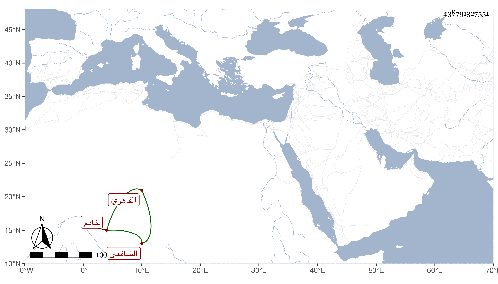

0902Sakhawi.DawLamic.ITO20230111-ara1.EIS1600.438791327551
Biography ID: 438791327551
313
الجنيد بن حسن بن علي محب الدين التخجواني وربما يقال الاقشواني القاهري الشافعي خادم البيبرسية ووالد محمد الآتي ويسمى أحمد . ولد تقريبا بعد سنة أربعين وسبعمائة وكتب بخطه على بعض الاستدعاءات مع أنا لم نر له سماعا نعم سمع بأخرة علي الشهاب الواسطي المسلسل والاجزاء التي اشتهر بروايتها وقبل ذلك على النور الابياري نزيل البيبرسية ثم على الشمس محمد بن عبد الرحمن ابن المرخم بل سمع بقراءتي على شيخنا والسيد النسابة وغيرهما ، ولزم وظيفته بصولة وحرمة حتى شاخ فانقطع ، وباشرها ابنه إلى أن مات في ذي القعدة سنة سبع وخمسين فاستقر فيها بعده رحمه الله .
